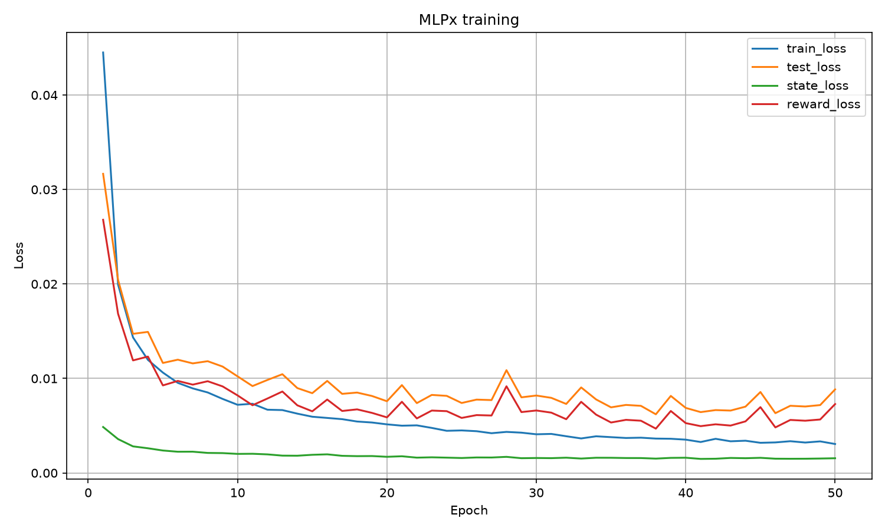
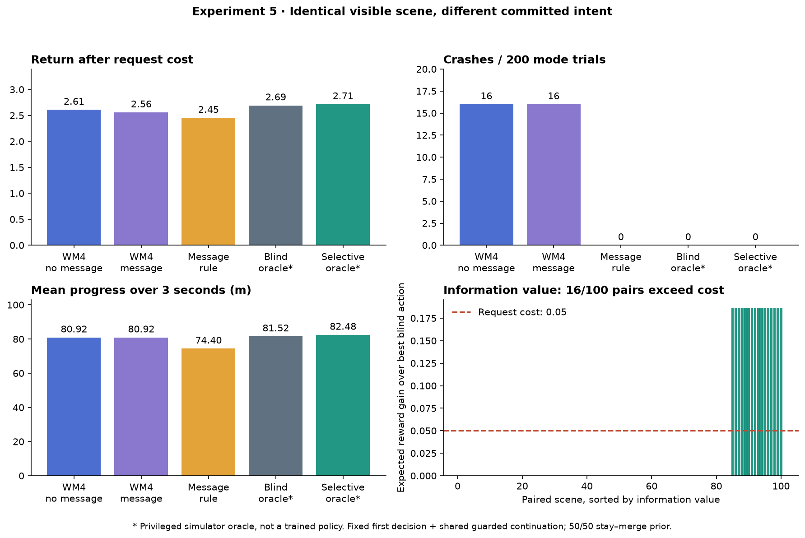
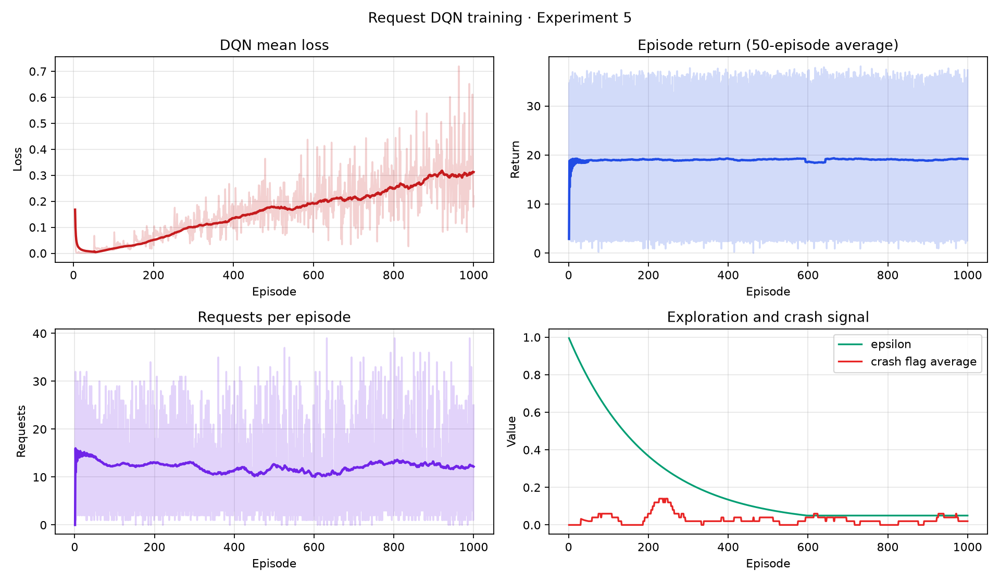
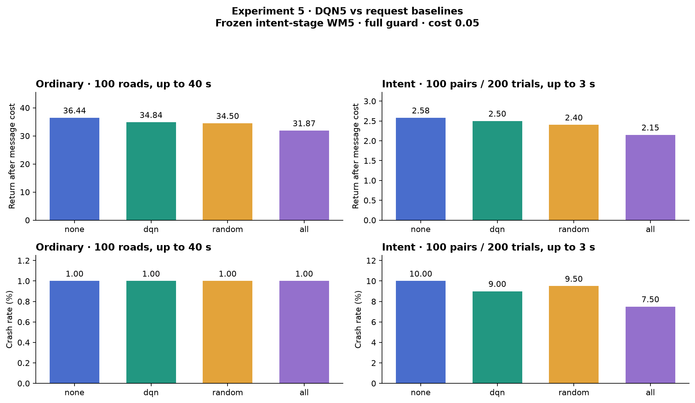

Experiment 5: Matched-Intent Challenge Scenarios & Mixed Traffic
Experiment 5 tests whether communication has measurable value when nearby vehicles conceal their destination lanes. It introduces matched-intent challenge scenes, an intent-sensitive World Model (WM5), and a mixed-traffic Request policy (DQN5). The controlled oracle shows that selective communication can help, while the learned DQN5 does not yet beat asking nobody after message costs.
- World Model Checkpoints:
checkpoints/experiment_5/MLPx/best.pt&intent_stage_best.pt - Request DQN Checkpoint:
checkpoints/experiment_5/RequestDQN/best.pt - Challenge Environment:
src/cooperative_driving/environments/intent_scenarios.py
Objective & Hypothesis
When neighboring vehicles have identical external kinematics but diverging hidden intentions (staying in their lane vs. aggressively cutting in), does exchanging intent messages prevent otherwise unavoidable collisions?
The Matched-Intent Benchmark
For every test seed, we generate two parallel worlds with identical kinematics at the decision point:
- World A (Neighbor Stays): Neighbor continues straight.
- World B (Neighbor Cuts In): Neighbor swerves directly into the ego lane.
Only when queried does the neighbor reveal its true intended target_lane.
Breakthrough Model: 118-Input MLPx (WM5)
To eliminate the "missing controller memory" discovered in Experiment 4, WM5 expanded the state vector to 118 inputs / 57 outputs by adding the ego's internal target speed and target lane.
We trained two 50-epoch models on 144,945 transitions:
- Initial WM5 (
best.pt): Lowest aggregate validation loss (0.0056 MSE). - Stage-Balanced WM5 (
intent_stage_best.pt): Re-weighted early ambiguous decisions, actively responding to neighbor intent messages.
Benchmark Results: Information Value (100 Paired Scenes / 200 Trials)
| Policy / Setup | Requests / Trial | Crashes / 200 | Net Return (After Cost) | Key Finding |
|---|---|---|---|---|
| Blind Acceleration Rule | 0.0 | 16 | 2.61 | Blind car crashes when cut-in occurs. |
| Conservative Braking Rule | 0.0 | 0 | 2.13 | Safe, but painfully slow. |
| Message-Conditioned Rule | 1.0 | 0 | 2.45 | Eliminated all 16 crashes using intent messages. |
| Stage-Balanced WM5 (Uninformed) | 0.0 | 12 | 2.62 | Baseline crashes when blind to cut-in. |
| Stage-Balanced WM5 (Informed) | 1.0 | 6 | 2.60 | Crashes cut in half (12 → 6) when given intent messages! |
| Selective Simulator Oracle | 0.16 | 0 | 2.71 | Highest net return by asking in only 16% of scenes. |
Training Metrics & Evaluation Graphs
Stage-Balanced World Model Loss Curves
Convergence of the 118-input model on critical early decision stages:

Information Value Benchmark
Distribution of information value across challenge scenes:

Request DQN Training
Reward and loss over 1,000 mixed ordinary and challenge episodes:

Policy Comparison
Comparing DQN5 against blind, random, and all-requesting baselines:

Learned DQN5 Evaluation
DQN5 was evaluated greedily on fresh seeds with the same frozen intent_stage_best.pt world model and safety guard used during training.
| Traffic set | Policy | Adjusted return | Requests | Crashes |
|---|---|---|---|---|
| 100 ordinary episodes | Ask nobody | 36.441 | 0.00 / episode | 1 / 100 |
| 100 ordinary episodes | DQN5 | 34.840 | 33.26 / episode | 1 / 100 |
| 200 intent trials | Ask nobody | 2.580 | 0.00 / trial | 20 / 200 |
| 200 intent trials | DQN5 | 2.500 | 1.73 / trial | 18 / 200 |
DQN5 avoided two crashes in the intent trials and beat random and all-request policies on adjusted return. However, it queried too frequently: communication costs outweighed the small safety gain, so asking nobody remained the stronger cost-adjusted policy in both traffic sets. This is a closed-loop learned-policy test and should not be confused with the simulator-oracle benchmark above.
Policy Driving Video
The trained Request DQN completes all 40 steps on the shared experiment-video seed 120, with live intent previews and executive safety guards active:
Key Findings & Conclusions
- Messages can cut crashes in controlled tests: Supplying genuine intent to the stage-balanced world model reduced crashes from 12 to 6 in its one-shot benchmark.
- The oracle target is selective: In 16% of the controlled scenes, intent changed the simulator oracle's action enough to justify the request cost.
- DQN5 has not reached that target: It made a modest safety improvement in closed-loop intent trials, but requested too often and lost adjusted return. The next improvement should focus on request selectivity, not merely longer training.